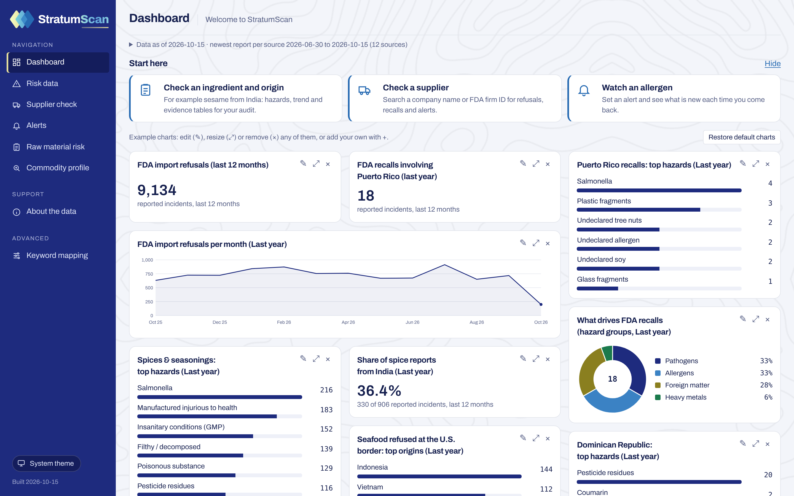

Te enteras tarde
Por un cliente, por un competidor o por las noticias, cuando ya hay producto en la góndola.
StratumScan Vigila afuera. Organiza adentro.
La plataforma de calidad hecha en Puerto Rico, en español. StratumScan vigila a tus suplidores e ingredientes en fuentes oficiales y organiza tu programa de calidad (suplidores, lotes, CAPAs, documentos y auditorías) en un solo expediente.
¿Qué lotes lo tienen? ¿A quién se vendieron? ¿Dónde está el certificado de ese suplidor? Empieza la búsqueda entre carpetas, correos y hojas de Excel, mientras el teléfono sigue sonando.
Por un cliente, por un competidor o por las noticias, cuando ya hay producto en la góndola.
La información vive en tu cabeza y en papeles. Si faltas un día, nadie sabe dónde está.
Puerto Rico importa la mayoría de lo que come. Tu planta merece herramientas a la altura de esa responsabilidad.
Hoy la operación vive en sistemas desconectados: los lotes en Excel, el recibo en papel, los certificados por correo. StratumScan los une en un solo expediente y lo vigila contra fuentes oficiales de EE.UU. y del mundo.
Pide y controla certificados de cada suplidor desde un solo lugar.
Controles preventivos, verificación de suplidores y registros de trazabilidad FSMA 204, integrados desde el diseño.
Cada documento, firma y cambio queda con fecha, autor e historial. Nada se sobrescribe ni se borra sin dejar rastro.
Rastrea un lote un paso atrás y adelante en segundos, no días.
Cuando llegue el auditor de tu certificación, de Walmart o de la FDA, la evidencia ya está organizada, vigente y con su historial completo.
Así trabajan juntas las dos mitades de StratumScan cuando sale un recall que te toca.
Vigilamos 13 fuentes oficiales por ti, todos los días.
Tus suplidores, ingredientes y productos ya están en StratumScan.
Trazabilidad un paso atrás y adelante, sin buscar en Excel.
Con responsable, fecha límite y el aviso adjunto.
Todo con fecha, autor e historial, listo para tu auditoría.
Ejemplo ilustrativo.

StratAI ve tus documentos, suplidores, hallazgos, sensores e historial, y los cruza entre sí. Pregunta en español o inglés y recibe respuestas con enlaces a los registros de donde salen.
Recupera [X] horas a la semana en documentación y auditorías
Somos una compañía de tecnología de Puerto Rico para la industria de alimentos. Construimos StratumScan para que la calidad deje de depender de la memoria de una sola persona.
En el caso de los arándanos con E. coli, StratumScan tenía el dato 5 semanas antes del recall en Puerto Rico.
Auditorías sin carreras. Un programa de calidad que tu empresa y tus clientes respetan. Días que terminan a su hora. Cuando tu comida es segura, tu marca también.
Agenda una demoTus suplidores, ingredientes, productos y documentos. Te ayudamos a cargarlos.
Revisamos por ti fuentes oficiales de EE.UU. y del mundo.
Recibes el aviso con lo que te afecta, abres la CAPA y la evidencia queda lista para tu auditoría.
[Respuesta por confirmar]
Sí. Tus documentos quedan organizados para la certificación SQF y las regulaciones federales.
[X días] desde la demo hasta tus primeras alertas.
De 13 fuentes oficiales, como la FDA, el USDA y agencias de Europa, Reino Unido, Canadá y Japón.
[Respuesta por confirmar]
Te mostramos cómo StratumScan vigilaría los suplidores e ingredientes de tu planta y organizaría tu programa de calidad.
La FDA exige cumplimiento el 20 de julio de 2028. Descubre en 3 minutos qué tan preparada está tu planta.
Haz la autoevaluación gratisAlertas PR, por StratumScan: revisa gratis si tus productos aparecen en los recalls que afectan a Puerto Rico.